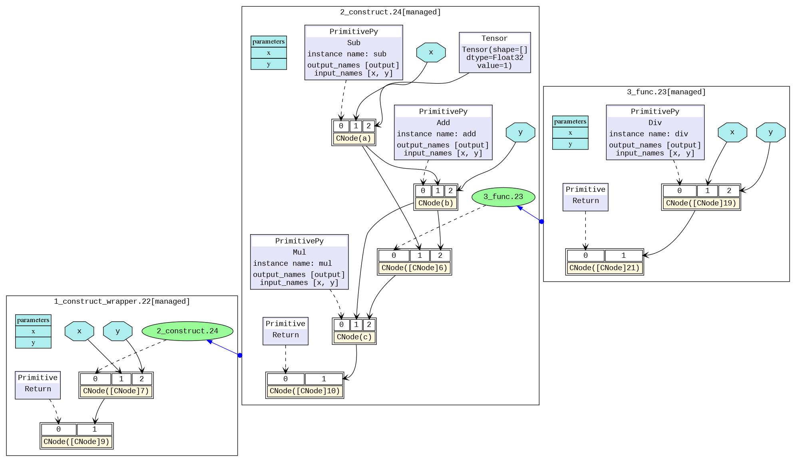

Reading IR¶

Overview¶
When a model compiled using MindSpore runs in the graph mode set_context(mode=GRAPH_MODE) and set_context(save_graphs=2) is set in the configuration, some intermediate files will be generated during graph compliation. These intermediate files are called IR files. Currently, there are two IR files:
.ir file: An IR file that describes the model structure in text format and can be directly viewed using any text editors. By setting environment variable
export MS_DEV_SAVE_GRAPTHS_SORT_MODE=1, an deep sorted ir can be generated. It can be switched back to the default ir file by setting environment variableMS_DEV_SAVE_GRAPTHS_SORT_MODEto any other value rather than 1..dot file: When
set_context(save_graphs=3)is set in the configuration, an IR file that describes the topology relationships between different nodes. You can use this file by graphviz as the input to generate images for users to view the model structure. For models with multiple operators, it is recommended using the visualization component MindInsight to visualize computing graphs.
Saving IR¶
set_context(save_graphs=2) is used to save the intermediate code in each compilation phase. The intermediate code can be saved in two formats, and the .ir file with the extension ‘.ir’ is saved by default. If set_context(save_graphs=3) is set, a graphical .ir file with the extension .dot is printed. When the network scale is small, you are advised to use the graphical format that is more intuitive. When the network scale is large, you are advised to use the text format that is more efficient.
You can run the graphviz command to convert a .dot file to the picture format. For example, you can run the dot -Tpng *.dot -o *.png command to convert a .dot file to a .png file.
In the training script train.py, we add the following code to the set_context function, when running the training script, MindSpore will automatically store the IR file generated during compilation to the specified path.
if __name__ == "__main__":
set_context(save_graphs=3, save_graphs_path="path/to/ir/files")
After the training command is executed, several files were generated under the specified path.
.
├──00_parse_0000.ir
├──00_parse_0001.dot
├──01_symbol_resolve_0002.ir
├──01_symbol_resolve_0003.dot
├──02_combine_like_graphs_0004.ir
├──02_combine_like_graphs_0005.dot
├──03_inference_opt_prepare_0006.ir
├──03_inference_opt_prepare_0007.dot
├──04_abstract_specialize_0008.ir
├──04_abstract_specialize_0009.dot
...
The IR files starting with digits and underscores are generated during the ME graph compilation. The compute graph is saved in each phase of the pipeline. Let’s see the important phases.
The
parsephase parses the entrance function and this phase generates MindIR initially. If viewing the IR file, we can see that only the graph information of the top Cell is parsed in this phase.The
symbol_resolvephase recursively parses entrance function, mainly recursive resolution entry functions directly or indirectly reference to other functions and objects. When using the unsupported syntax, it will get an error in this phase.The
abstract_specializephase means that the data type and shape information for all nodes in the IR is deduced from the input information. When you want to know the shape or data type of a specific operator in IR, you can view this IR file.The
optimizephase refers hardware-independent optimization is performed. The automatic differential and automatic parallel functions are also performed. This stage can be subdivided into several substages. In the list of IR files, where the files prefixed withopt_pass_ [ordinal]are IR files saved after the end of these sub-stages, non-framework developers do not need to pay too much attention.The
validatephase will verify the compiled compute graph and check the temporary operators which should be removed in the prior phase. If any temporary operator exists, the process will report an error and exit.The
task_emitphase will transfer the compute graph to the backend for further processing.The
executephase will execute the compute graph. The IR graph in this stage is the final graph in the phase of frontend.
In addition, because the backend is closer to the bottom layer, non-framework developers do not need to pay much attention to other IR files saved during the backend optimization process (such as files that begin with hwopt). Non-framework developers only need to look at the file named graph_build_[Graph Sequence Number]_[IR File Sequence Number].ir, i.e. IR after all front and back end optimizations.
Multiple files may be saved because the backend is optimized on subgraphs, which is different from the mechanism by which multiple subgraphs on the front end are saved in the same file.
IR File Contents Introduction¶
The following is an example to describe the contents of the IR file. Run the script:
import mindspore as ms
import mindspore.nn as nn
from mindspore import ops
ms.set_context(mode=ms.GRAPH_MODE)
ms.set_context(save_graphs=2, save_graphs_path="./")
class Net(nn.Cell):
def __init__(self):
super().__init__()
self.add = ops.Add()
self.sub = ops.Sub()
self.mul = ops.Mul()
self.div = ops.Div()
def func(x, y):
return self.div(x, y)
def construct(self, x, y):
a = self.sub(x, 1)
b = self.add(a, y)
c = self.mul(b, self.func(a, b))
return c
input1 = ms.Tensor(3, ms.float32)
input2 = ms.Tensor(2, ms.float32)
net = Net()
out = net(input1, input2)
print(out)
ir Introduction¶
Use a text editing software (for example, vi) to open the 04_abstract_specialize_0012.ir file output after execution. The file contents are as follows (Here is MindSpore 2.0, and the content may have some imperceptible changes with the version upgrade):
1 #IR entry : @1_Default_wrapper.24
2 #Total subgraph: 3
3
4 #attrs :
5 #Total params : 2
6
7 %para1_x : <Tensor[Float32], ()>
8 %para2_y : <Tensor[Float32], ()>
9
10 subgraph attr:
11 undeterminate : 0
12 subgraph instance: 2_Default.23 : 0x556cab47cd00
13 # In file testir1.py:19/ def construct(self, x, y):/
14 subgraph @2_Default.23(%para3_x, %para4_y) {
15 %0(a) = Sub(%para3_x, Tensor(shape=[], dtype=Float32, value=1)) {instance name: sub} primitive_attrs: {output_names: [output], input_names: [x, y]}
16 : (<Tensor[Float32], ()>, <Tensor[Float32], (), value=...>) -> (<Tensor[Float32], ()>)
17 # scope: (Default)
18 # In file testir1.py:20/ a = self.sub(x, 1)/
19 %1(b) = Add(%0, %para4_y) {instance name: add} primitive_attrs: {output_names: [output], input_names: [x, y]}
20 : (<Tensor[Float32], ()>, <Tensor[Float32], ()>) -> (<Tensor[Float32], ()>)
21 # scope: (Default)
22 # In file testir1.py:21/ b = self.add(a, y)/
23 %2([CNode]5) = call @3_func.22(%0, %1)
24 : (<Tensor[Float32], ()>, <Tensor[Float32], ()>) -> (<Tensor[Float32], ()>)
25 # scope: (Default)
26 # In file testir1.py:22/ c = self.mul(b, self.func(a, b))/
27 %3(c) = Mul(%1, %2) {instance name: mul} primitive_attrs: {output_names: [output], input_names: [x, y]}
28 : (<Tensor[Float32], ()>, <Tensor[Float32], ()>) -> (<Tensor[Float32], ()>)
29 # scope: (Default)
30 # In file testir1.py:22/ c = self.mul(b, self.func(a, b))/
31 Return(%3)
32 : (<Tensor[Float32], ()>)
33 # scope: (Default)
34 # In file testir1.py:23/ return c/
35 }
36 # order:
37 # 1: @2_Default.23:a{[0]: ValueNode `<PrimitivePy>` Sub, [1]: x, [2]: ValueNode `<Tensor>` Tensor(shape=[], dtype=Float32, value=1)}
38 # 2: @2_Default.23:b{[0]: ValueNode `<PrimitivePy>` Add, [1]: a, [2]: y}
39 # 3: @2_Default.23:[CNode]5{[0]: ValueNode `<FuncGraph>` 3_func.22, [1]: a, [2]: b}
40 # 4: @2_Default.23:c{[0]: ValueNode `<PrimitivePy>` Mul, [1]: b, [2]: [CNode]5}
41 # 5: @2_Default.23:[CNode]17{[0]: ValueNode `<Primitive>` Return, [1]: c}
42
43
44 subgraph attr:
45 undeterminate : 0
46 subgraph instance: 3_func.22 : 0x556cab481200
47 # In file testir1.py:16/ def func(x, y):/
48 subgraph @3_func.22(%para5_x, %para6_y) {
49 %0([CNode]19) = Div(%para5_x, %para6_y) {instance name: div} primitive_attrs: {output_names: [output], input_names: [x, y]}
50 : (<Tensor[Float32], ()>, <Tensor[Float32], ()>) -> (<Tensor[Float32], ()>)
51 # scope: (Default)
52 # In file testir1.py:17/ return self.div(x, y)/
53 Return(%0)
54 : (<Tensor[Float32], ()>)
55 # scope: (Default)
56 # In file testir1.py:17/ return self.div(x, y)/
57 }
58 # order:
59 # 1: @3_func.22:[CNode]19{[0]: ValueNode `<PrimitivePy>` Div, [1]: x, [2]: y}
60 # 2: @3_func.22:[CNode]21{[0]: ValueNode `<Primitive>` Return, [1]: [CNode]19}
61
62
63 subgraph attr:
64 subgraph instance: 1_Default_wrapper.24 : 0x556cab47b0e0
65 # In file testir1.py:19/ def construct(self, x, y):/
66 subgraph @1_Default_wrapper.24() {
67 %0([CNode]6) = call @2_Default.23(%para1_x, %para2_y)
68 : (<Tensor[Float32], ()>, <Tensor[Float32], ()>) -> (<Tensor[Float32], ()>)
69 # scope: (Default)
70 Return(%0)
71 : (<Tensor[Float32], ()>)
72 # scope: (Default)
73 # In file testir1.py:23/ return c/
74 }
75 # order:
76 # 1: @1_Default_wrapper.24:[CNode]6{[0]: ValueNode `<FuncGraph>` 2_Default.23, [1]: x, [2]: y}
77 # 2: @1_Default_wrapper.24:[CNode]18{[0]: ValueNode `<Primitive>` Return, [1]: [CNode]6}
The above contents can be divided into two parts. The first part is the input list and the second part is the graph structure:
Line 1 tells us
1_construct_wrapper.24, the name of the top MindSpore graph about the network, which is the entry graph.Line 2 tells us the number of subgraph parsed by the network. There are 3 graphs in this IR. Line 42 is the entry graph
1_construct_wrapper.24. Line 32 is graph3_func.22, parsed from thefunc(x, y)defined in the network. Line 12 is graph2_construct.23, parsed from the functionconstruct.Line 5 tells us how many inputs are in the network.
Line 7 to 8 are the input list, which is in the format of
%para[No.]_[name] : <[data_type]x[shape]>.
Taking graph 2_construct.23 as an example:
Line 10 to 41 indicate the graph structure, which contains several nodes, namely,
CNode. In this example, there areSub,Add,Muldefined in the function__init__.Line 23 shows that figure
3_func.22is called in the form ofcall @3_func.22, corresponding to the execution of the two-digit division of the functionfuncin the script.Line 36 to 41 shows the execution order of the compute nodes in the graph, corresponding to the order of code execution. The information format is:
No.: belonging graph:node name{[0]: the first input, [1]: the second input, ...}. ForCNode, the first input indicates how to compute for thisCNode.
The CNode (check the design of ANF-IR) information format is as follows: from left to right, the ordinal number, node name - debug_name, operator name - op_name, input node - arg, attributes of the node - primitive_attrs, input and output specifications, source code parsing call stack and other information. Because the ANF graph is a unidirectional acyclic graph, the connection between nodes is displayed only based on the input relationship. The corresponding source code reflects the relationship between the CNode and the script source code. For example, line 15 is parsed from a = self.sub(x, 1).
%[No.]([debug_name]) = [op_name]([arg], ...) primitive_attrs: {[key]: [value], ...}
: (<[input data_type]x[input shape]>, ...) -> (<[output data_type]x[output shape]>, ...)
# Corresponding source code
About the corresponding source code:
There are two mode for the corresponding source code displaying. The first mode is to display the complete call stack, such as
15_execute_0141.iron the frontend andgraph_build_0_136.iron the backend. The second mode only displays one code line for reducing the size of the IR file, which eliminates the call stack, such as04_abstract_specialize_0012.ir.If the operator is a back propagation operator, the associated code line will not only display its own code, but also the corresponding forward code, identified by “Corresponding forward node candidate:”.
If the operator is a fusion operator, the associated code line will display the fusion related code, identified by “Corresponding code candidate:”, where the separator “-” is used to distinguish different codes.
After several optimizations by the compiler, the node may undergo several changes (such as operator splitting and operator merging). The source code parsing call stack information of the node may not be in a one-to-one correspondence with the script. This is only an auxiliary method.
After the
kernel selectphase at the backend, two lines of input and output specification information (that is, the content after:) will appear. The first line represents the specifications on theHOSTside, and the second line represents the specifications on theDEVICEside.
deep sorted ir Introduction¶
Use a text editing software (for example, vi) to open the 04_abstract_specialize_0008.ir file after setting environment variable export MS_DEV_SAVE_GRAPTHS_SORT_MODE=1. The file contents are as follows (Here is MindSpore 2.0, and the content may have some imperceptible changes with the version upgrade):
1 #IR entry : @1_construct.Default_wrapper.22
2 #Total subgraph: 3
3
4 #attrs :
5 #Total params : 2
6
7 %para1_x : <Tensor[Float32], ()>
8 %para2_y : <Tensor[Float32], ()>
9
10 subgraph attr:
11 subgraph instance: 1_construct.Default_wrapper.22 : 0x5568122fcf90
12 # In file kldtest.py:19/ def construct(self, x, y):/
13 subgraph @1_construct.Default_wrapper.22() {
14 %0([CNode]2) = call @2_construct.Default.23(%para1_x, %para2_y)
15 : (<Tensor[Float32], ()>, <Tensor[Float32], ()>) -> (<Tensor[Float32], ()>)
16 # scope: (Default)
17 Return(%0)
18 : (<Tensor[Float32], ()>)
19 # scope: (Default)
20 # In file kldtest.py:23/ return c/
21 }
22 # order:
23 # 1: @1_construct.Default_wrapper.22:[CNode]2{[0]: ValueNode `<FuncGraph>` 2_construct.Default.23, [1]: x, [2]: y}
24 # 2: @1_construct.Default_wrapper.22:[CNode]4{[0]: ValueNode `<Primitive>` Return, [1]: [CNode]2}
25
26
27 subgraph attr:
28 undeterminate : 0
29 subgraph instance: 2_construct.Default.23 : 0x5568122fe9c0
30 # In file kldtest.py:19/ def construct(self, x, y):/
31 subgraph @2_construct.Default.23(%para3_x, %para4_y) {
32 %0(a) = Sub(%para3_x, Tensor(shape=[], dtype=Float32, value=1)) {instance name: sub} primitive_attrs: {output_names: [output], input_names: [x, y]}
33 : (<Tensor[Float32], ()>, <Tensor[Float32], (), value=...>) -> (<Tensor[Float32], ()>)
34 # scope: (Default)
35 # In file kldtest.py:20/ a = self.sub(x, 1)/
36 %1(b) = Add(%0, %para4_y) {instance name: add} primitive_attrs: {output_names: [output], input_names: [x, y]}
37 : (<Tensor[Float32], ()>, <Tensor[Float32], ()>) -> (<Tensor[Float32], ()>)
38 # scope: (Default)
39 # In file kldtest.py:21/ b = self.add(a, y)/
40 %2([CNode]9) = call @3_func.24(%0, %1)
41 : (<Tensor[Float32], ()>, <Tensor[Float32], ()>) -> (<Tensor[Float32], ()>)
42 # scope: (Default)
43 # In file kldtest.py:22/ c = self.mul(b, self.func(a, b))/
44 %3(c) = Mul(%1, %2) {instance name: mul} primitive_attrs: {output_names: [output], input_names: [x, y]}
45 : (<Tensor[Float32], ()>, <Tensor[Float32], ()>) -> (<Tensor[Float32], ()>)
46 # scope: (Default)
47 # In file kldtest.py:22/ c = self.mul(b, self.func(a, b))/
48 Return(%3)
49 : (<Tensor[Float32], ()>)
50 # scope: (Default)
51 # In file kldtest.py:23/ return c/
52 }
53 # order:
54 # 1: @2_construct.Default.23:a{[0]: ValueNode `<PrimitivePy>` Sub, [1]: x, [2]: ValueNode `<Tensor>` Tensor(shape=[], dtype=Float32, value=1)}
55 # 2: @2_construct.Default.23:b{[0]: ValueNode `<PrimitivePy>` Add, [1]: a, [2]: y}
56 # 3: @2_construct.Default.23:[CNode]9{[0]: ValueNode `<FuncGraph>` 3_func.24, [1]: a, [2]: b}
57 # 4: @2_construct.Default.23:c{[0]: ValueNode `<PrimitivePy>` Mul, [1]: b, [2]: [CNode]9}
58 # 5: @2_construct.Default.23:[CNode]18{[0]: ValueNode `<Primitive>` Return, [1]: c}
59
60
61 subgraph attr:
62 undeterminate : 0
63 subgraph instance: 3_func.24 : 0x556812302e20
64 # In file kldtest.py:16/ def func(x, y):/
65 subgraph @3_func.24(%para3_x, %para4_y) {
66 %0([CNode]20) = Div(%para3_x, %para4_y) {instance name: div} primitive_attrs: {output_names: [output], input_names: [x, y]}
67 : (<Tensor[Float32], ()>, <Tensor[Float32], ()>) -> (<Tensor[Float32], ()>)
68 # scope: (Default)
69 # In file kldtest.py:17/ return self.div(x, y)/
70 Return(%0)
71 : (<Tensor[Float32], ()>)
72 # scope: (Default)
73 # In file kldtest.py:17/ return self.div(x, y)/
74 }
75 # order:
76 # 1: @3_func.24:[CNode]20{[0]: ValueNode `<PrimitivePy>` Div, [1]: x, [2]: y}
77 # 2: @3_func.24:[CNode]21{[0]: ValueNode `<Primitive>` Return, [1]: [CNode]20}
Above, it lists all the graphs beginning with the entry graph.
dot Introduction¶
We can use this file by graphviz as the input to generate images for users to view the model structure. For example, under the Linux operating system, we can convert a PNG image by the following command.
dot -Tpng -o 04_abstract_specialize_0014.png 04_abstract_specialize_0014.dot
The transformed image is shown below, and we can visually see the model structure. The different black boxes distinguish different subgraphs, and the blue arrows between graphs represent calling another graph. The blue area represents the parameter, the rectangle represents the parameter list of the graph, the hexagon and the black arrow represent the parameter as the input of the CNode to participate in the calculation process. The yellow rectangle represents the CNode. As can be seen from the picture, the CNode input starts from index 0, and the 0th input (that is, the purple or green area) represents what calculation the operator will perform, which is connected by a dotted arrow. The type is usually an operator primitive, or it can also be another graph. The rest inputs are the parameters required for the calculation.

For models with multiple operators, the picture will be very large. It is recommended by using the visualization component MindInsight to visualize compute graphs.
How to derive the cause of the failure based on the analyze_fail.ir file analysis graph¶
In the process of MindSpore compiling a graph, the exceptions about graph evaluating fail usually happen. But we can find the reason by analyzing the exception information and analyze_fail.ir.
Example 1: parameters number mismatch¶
1 import mindspore as ms
2 import mindspore.nn as nn
3
4 from mindspore.nn import Cell
5 from mindspore import ops
6
7
8 ms.set_context(mode=ms.GRAPH_MODE)
9 ms.set_context(save_graphs=2)
10
11 class Net(nn.Cell):
12 def __init__(self):
13 super().__init__()
14 self.add = ops.Add()
15 self.sub = ops.Sub()
16 self.mul = ops.Mul()
17 self.div = ops.Div()
18
19 def func(x, y):
20 return self.div(x, y)
21
22 def construct(self, x, y):
23 a = self.sub(x, 1)
24 b = self.add(a, y)
25 c = self.mul(b, self.func(a, a, b))
26 return c
27
28 input1 = ms.Tensor(3, ms.float32)
29 input2 = ms.Tensor(2, ms.float32)
30 net = Net()
31 out = net(input1, input2)
32 print(out)
An error happens.
1 [EXCEPTION] ANALYZER(31946,7f6f03941740,python):2021-09-18-15:10:49.094.863 [mindspore/ccsrc/pipeline/jit/static_analysis/stack_frame.cc:85] DoJump] The parameters number of the function is 2, but the number of provided arguments is 3.
2 FunctionGraph ID : func.18
3 NodeInfo: In file test.py(17)
4 def func(x, y):IR file with different graph printing order
5
6 Traceback (most recent call last):
7 File "test.py", line 29, in <module>
8 out = net(input1, input2)
9 File "/home/workspace/mindspore/mindspore/nn/cell.py", line 404, in __call__
10 out = self.compile_and_run(*inputs)
11 File "/home/workspace/mindspore/mindspore/nn/cell.py", line 682, in compile_and_run
12 self.compile(*inputs)
13 File "/home/workspace/mindspore/mindspore/nn/cell.py", line 669, in compile
14 _cell_graph_executor.compile(self, *inputs, phase=self.phase, auto_parallel_mode=self._auto_parallel_mode)
15 File "/home/workspace/mindspore/mindspore/common/api.py", line 542, in compile
16 result = self._graph_executor.compile(obj, args_list, phase, use_vm, self.queue_name)
17 TypeError: mindspore/ccsrc/pipeline/jit/static_analysis/stack_frame.cc:85 DoJump] The parameters number of the function is 2, but the number of provided arguments is 3.
18 FunctionGraph ID : func.18
19 NodeInfo: In file test.py(17)
20 def func(x, y):
21
22 The function call stack (See file '/home/workspace/mindspore/rank_0/om/analyze_fail.ir' for more details):
23 # 0 In file test.py(24)
24 return c
25 ^
26 # 1 In file test.py(23)
27 c = self.mul(b, self.func(a, a, b))
28 ^
Above exception is “TypeError: mindspore/ccsrc/pipeline/jit/static_analysis/stack_frame.cc:85 DoJump] The parameters number of the function is 2, but the number of provided arguments is 3…”.
And it tells us FunctionGraph ID : func.18 only needs two parameters, but actually gives 3.
We can find the related code is self.func(a, a, b) from ‘The function call stack … In file test.py(23)’.
Easily, by checking the code, we know that we gave too much parameter to the calling function.
Sometimes when the exception information is not enough easy to understand, or we want to see the part of graph information that have evaluated, we use text editing software (e.g., vi) to open the file (in parentheses on line 20) that prompts in the error message: /home/workspace/mindspore/rank_0/om/analyze_fail.ir with the following content (Here is MindSpore 2.0, and the content may have some imperceptible changes with the version upgrade):
1 # 1.This file shows the parsed IR info when graph evaluating failed to help find the problem.
2 # 2.You can search the last `------------------------>` to the node which is inferred failed.
3 # 3.Refer to https://www.mindspore.cn/search?inputValue=analyze_fail.ir to get more instructions.
4 # ===============================================================================
5
6 subgraph attr:
7 subgraph instance: Default_wrapper.8 : 0x55b95477d120
8 # In file testir1.py:22/ def construct(self, x, y):/
9 subgraph @Default_wrapper.8(
10 %para1_x : <Tensor[Float32], ()>
11 , %para2_y : <Tensor[Float32], ()>
12 ) {
13
14 #------------------------> 0
15 %1([CNode]6) = call @Default.7(%para1_x, %para2_y)
16 :(<Tensor[Float32], ()>, <Tensor[Float32], ()>) -> (`<null>`)
17 #scope: Default
18 Primitive::Return{prim_type=1}(%1)
19 :(`<null>`)
20 #scope: Default
21 # In file testir1.py:26/ return c/
22 }
23 # order:
24 # 1: @Default_wrapper.8:[CNode]6{[0]: ValueNode `<FuncGraph>` Default.7, [1]: x, [2]: y}
25 # 2: @Default_wrapper.8:[CNode]18{[0]: ValueNode `<Primitive>` Return, [1]: [CNode]6}
26
27
28 subgraph attr:
29 subgraph instance: Default.7 : 0x55b95477c800
30 # In file testir1.py:22/ def construct(self, x, y):/
31 subgraph @Default.7(
32 %para3_x : <Tensor[Float32], ()>
33 , %para4_y : <Tensor[Float32], ()>
34 ) {
35 %1(a) = DoSignaturePrimitive::S-Prim-Sub{prim_type=1}[output_names=["output"], input_names=["x", "y"]](%para3_x, I64(1))
36 :(<Tensor[Float32], ()>, <Int64, NoShape>) -> (<Tensor[Float32], ()>)
37 #scope: Default
38 # In file testir1.py:23/ a = self.sub(x, 1)/
39 %2(b) = DoSignaturePrimitive::S-Prim-Add{prim_type=1}[output_names=["output"], input_names=["x", "y"]](%1, %para4_y)
40 :(<Tensor[Float32], ()>, <Tensor[Float32], ()>) -> (<Tensor[Float32], ()>)
41 #scope: Default
42 # In file testir1.py:24/ b = self.add(a, y)/
43
44 #------------------------> 1
45 %3([CNode]5) = call @func.20(%1, %1, %2)
46 :(<Tensor[Float32], ()>, <Tensor[Float32], ()>, <Tensor[Float32], ()>) -> (`<null>`)
47 #scope: Default
48 # In file testir1.py:25/ c = self.mul(b, self.func(a, a, b))/
49 %4(c) = DoSignaturePrimitive::S-Prim-Mul{prim_type=1}[output_names=["output"], input_names=["x", "y"]](%2, %3)
50 :(<Tensor[Float32], ()>, `<null>`) -> (`<null>`)
51 #scope: Default
52 # In file testir1.py:25/ c = self.mul(b, self.func(a, a, b))/
53 Primitive::Return{prim_type=1}(%4)
54 :(`<null>`)
55 #scope: Default
56 # In file testir1.py:26/ return c/
57 }
58 # order:
59 # 1: @Default.7:a{[0]: a, [1]: ValueNode `<Int64Imm>` 1, [2]: ValueNode `<Float>` Float32}
60 # 2: @Default.7:a{[0]: ValueNode `<DoSignaturePrimitive>` S-Prim-Sub, [1]: x, [2]: ValueNode `<Int64Imm>` 1}
61 # 3: @Default.7:b{[0]: ValueNode `<DoSignaturePrimitive>` S-Prim-Add, [1]: a, [2]: y}
62 # 4: @Default.7:[CNode]5{[0]: ValueNode `<FuncGraph>` func.20, [1]: a, [2]: a, [3]: b}
63 # 5: @Default.7:c{[0]: ValueNode `<DoSignaturePrimitive>` S-Prim-Mul, [1]: b, [2]: [CNode]5}
64 # 6: @Default.7:[CNode]17{[0]: ValueNode `<Primitive>` Return, [1]: c}
65
66
67 #===============================================================================
68 # num of function graphs in stack: 2
The file analyze_fail.ir has the same information format with deep sorted ir file. The only difference is analyze_fail.ir will locate the node which inferring failed.
Searching the point by the text of ------------------------>, we reach the last position of the ------------------------> 1 at line 44. This last arrow points to the node that derives the error, which is %3([CNode]5) = call @func.20(%1, %1, %2) ...., which expresses the information of the node in IR. How to view the deep sorted ir file has been described in the deep sorted ir Introduction section earlier, and will not be repeated here.
The node at line 45 to 48 have an error. Its IR expression is %3([CNode]5) = call @func.20(%1, %1, %2) .... We can know the node have 3 parameters from (%1, %1, %2). From the source parsing call stack, it can be known that the function is actually self.func, which is defined in the script as def dunc(x, y):....
In the function definition, only two parameters are needed, so there will be a deduction failure error, and we need to modify the number of parameters passed in the script to solve the problem.
Example 2: BiasAdd inputs shape mismatch¶
1 import numpy as np
2 import mindspore
3 from mindspore import nn, ops, set_context, Tensor, Parameter
4 from mindspore.common.initializer import initializer
5
6 class Net(nn.Cell):
7 def __init__(self):
8 super(Net, self).__init__()
9 self.weight = Parameter(initializer('normal', [32, 8]), name="weight")
10 self.bias = Parameter(initializer('zeros', [4]), name="bias")
11
12 self.matmul = ops.MatMul()
13 self.bias_add = ops.BiasAdd()
14
15 def construct(self, x1):
16 x = self.matmul(x1, self.weight)
17 x = self.bias_add(x, self.bias)
18 return x
19
20 net = Net()
21 x = Tensor(np.arange(3*32).reshape(3, 32), mindspore.float32)
22 out = net(x)
23 print('out', out.shape)
An error happens.
Traceback (most recent call last):
File "test.py", line 22, in <module>
out = net(x)
File "/home/workspace/mindspore/build/package/mindspore/nn/cell.py", line 573, in __call__
out = self.compile_and_run(*args)
File "/home/workspace/mindspore/build/package/mindspore/nn/cell.py", line 956, in compile_and_run
self.compile(*inputs)
File "/home/workspace/mindspore/build/package/mindspore/nn/cell.py", line 929, in compile
_cell_graph_executor.compile(self, *inputs, phase=self.phase, auto_parallel_mode=self._auto_parallel_mode)
File "/home/workspace/mindspore/build/package/mindspore/common/api.py", line 1076, in compile
result = self._graph_executor.compile(obj, args_list, phase, self._use_vm_mode())
ValueError: For 'BiasAdd', bias[0] shape must be equal to input_x[1] shape when data_format is NHWC or input_x[1] shape, but got bias[0] shape: 4, input_x[1] or input_x[1] shape: 8.
----------------------------------------------------
- The Traceback of Net Construct Code:
----------------------------------------------------
The function call stack (See file '/home/workspace/mindspore/rank_0/om/analyze_fail.ir' for more details. Get instructions about `analyze_fail.ir` at https://www.mindspore.cn/search?inputValue=analyze_fail.ir):
# 0 In file test.py(17)
x = self.bias_add(x, self.bias)
^
----------------------------------------------------
- C++ Call Stack: (For framework developers)
----------------------------------------------------
mindspore/core/ops/bias_add.cc:71 BiasAddInferShape
The above reports that the errors is caused by the mismatching of the shape of the first input and the second input of the operator BiasAdd. To further understand what changes have taken place in the shape of the operator, we use text editing software (e.g., vi) to open the file that prompts in the error message: /home/workspace/mindspore/rank_0/om/analyze_fail.ir with the following content (Here is MindSpore 2.0, and the content may have some imperceptible changes with the version upgrade):
1 # 1.This file shows the parsed IR info when graph evaluating failed to help find the problem.
2 # 2.You can search the last `------------------------>` to the node which is inferred failed.
3 # 3.Refer to https://www.mindspore.cn/search?inputValue=analyze_fail.ir to get more instructions.
4 # ===============================================================================
5
6 subgraph attr:
7 subgraph instance: Default_wrapper.1 : 0x55ef771b9dd0
8 # In file testir1.py:14/ def construct(self, x1):/
9 subgraph @Default_wrapper.1(
10 %para1_x1 : <Tensor[Float32], (3, 32)>
11 , %para2_bias : <Ref[Tensor(F32)], (4)> : has_default
12 , %para3_weight : <Ref[Tensor(F32)], (32, 8)> : has_default
13 ) {
14
15 #------------------------> 0
16 %1([CNode]3) = call @Default.2(%para1_x1)
17 :(<Tensor[Float32], (3, 32)>) -> (`<null>`)
18 #scope: Default
19 Primitive::Return{prim_type=1}(%1)
20 :(`<null>`)
21 #scope: Default
22 # In file testir1.py:17/ return x/
23 }
24 # order:
25 # 1: @Default_wrapper.1:[CNode]3{[0]: ValueNode `<FuncGraph>` Default.2, [1]: x1}
26 # 2: @Default_wrapper.1:[CNode]4{[0]: ValueNode `<Primitive>` Return, [1]: [CNode]3}
27
28
29 subgraph attr:
30 subgraph instance: Default.2 : 0x55ef771b11a0
31 # In file testir1.py:14/ def construct(self, x1):/
32 subgraph @Default.2 parent: [subgraph @Default_wrapper.1](
33 %para4_x1 : <Tensor[Float32], (3, 32)>
34 ) {
35 %1(x) = DoSignaturePrimitive::S-Prim-MatMul{prim_type=1}[output_names=["output"], transpose_a=Bool(0), input_names=["x1", "x2"], transpose_x2=Bool(0), transpose_x1=Bool(0), transpose_b=Bool( 0)](%para4_x1, %para3_weight)
36 :(<Tensor[Float32], (3, 32)>, <Ref[Tensor(F32)], (32, 8)>) -> (<Tensor[Float32], (3, 8)>)
37 #scope: Default
38 # In file testir1.py:15/ x = self.matmul(x1, self.weight)/
39
40 #------------------------> 1
41 %2(x) = DoSignaturePrimitive::S-Prim-BiasAdd{prim_type=1}[output_names=["output"], format="NCHW", input_names=["x", "b"], data_format="NCHW"](%1, %para2_bias)
42 :(<Tensor[Float32], (3, 8)>, <Ref[Tensor(F32)], (4)>) -> (`<null>`)
43 #scope: Default
44 # In file testir1.py:16/ x = self.bias_add(x, self.bias)/
45 Primitive::Return{prim_type=1}(%2)
46 :(`<null>`)
47 #scope: Default
48 # In file testir1.py:17/ return x/
49 }
50 # order:
51 # 1: @Default.2:x{[0]: ValueNode `<DoSignaturePrimitive>` S-Prim-MatMul, [1]: x1, [2]: weight}
52 # 2: @Default.2:x{[0]: ValueNode `<DoSignaturePrimitive>` S-Prim-BiasAdd, [1]: x, [2]: bias}
53 # 3: @Default.2:[CNode]5{[0]: ValueNode `<Primitive>` Return, [1]: x}
54
55
56 #===============================================================================
57 # num of function graphs in stack: 2/3 (Ignored 1 internal frames).
Search ------------------------> to the position where inferring failed at line 41. According to ...(%1, %para2_bias) :(<Tensor[Float32], (3, 8)>, <Ref[Tensor(F32)], (4)>) -> (), BiasAdd’s inputs are %1 and %para2_bias. That %1’ with shape [3, 8] and %para2_bias with shape [4] doesn’t meet the requirement about bias (Tensor) - The bias tensor, with shape (C). C must be the same as channel dimension C of input_x... for BiasAdd API. Thus, an error happens.
To solve this problem, we need modify the shape of %1 or %para2_bias (namely self.bias).
For
%para2_bias(namelyself.bias), we modify the shape ofself.biasbyself.bias = Parameter(initializer('zeros', [8]), name="bias").For
%1, we need know what%1is. According to line 35,%1is aMatMulwith output shape[3, 8]. Its inputs are(%para4_x1, %para3_weight). The first input (namely given argx) shape is[3, 32]and the second input (namelyself.weight) shape is[32, 8]. To meet the requirement ofBiasAddwith the data shape[4], the shape of%1output needs to be[3, 4]. Therefore, we modifyself.weightbyself.weight = Parameter(initializer('normal', [32, 4]), name="weight").